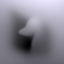
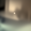
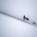
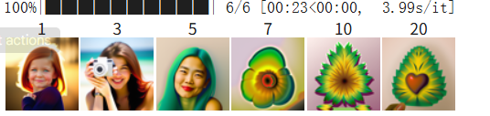
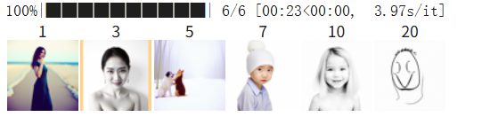
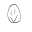
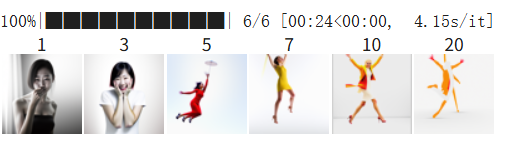
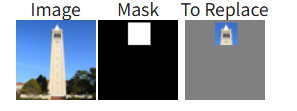
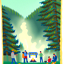

CS180: Intro to Computer Vision
Project 5 (Part A): Diffusion Models
Student: Your Name
SID: XXXXXXXX
Course: CS180 at UC Berkeley
Seed Used: (Fill In)
Part 0 — Setup
Prompt Embeddings Created
I generated prompt embeddings using the provided HuggingFace clusters.
My custom prompts include:
- "prompt 1"
- "prompt 2"
- "prompt 3"
Generated Images from My Prompts
Below are 3 sampled images from my prompts using different num_inference_steps.
 Prompt 1 Output
Prompt 1 Output
 Prompt 2 Output
Prompt 2 Output
 Prompt 3 Output
Prompt 3 Output
Reflection:
(Write your own explanation on alignment quality)
Part 1.1 — Forward Process
I implemented the forward diffusion process:
Noisy image = sqrt(a̅_t) * image + sqrt(1 - a̅_t) * noise
Below are noisy Campanile images for t = 250, 500, 750.
Part 1.5 — Sampling from Noise
I sampled 5 images using i_start = 0:
Sample 1
Sample 2
Sample 3
Sample 4
Sample 5
Part 1.6 — Classifier-Free Guidance (CFG)
I implemented conditional + unconditional UNet calls.
CFG greatly improves quality.
CFG Sample 1
CFG Sample 2
CFG Sample 3
Part 1.7.1 — Editing Hand-Drawn & Web Images
Web Image Example
i_start = 1
 i_start = 20
i_start = 20
Two Hand-Drawn Examples
Draw 1 (i=1)
Draw 1 (i=20)
Draw 2 (i=1)
Draw 2 (i=20)
Part 1.7.2 — Inpainting
Mask
Inpainting Mask
Results
Inpaint Result 1
Inpaint Result 2
Inpaint Result 3
Part 1.8 — Visual Anagrams (Optical Illusions)
Example 1
 Upright
Upright
 Flipped
Flipped
Example 2
 Upright
Upright
 Flipped
Flipped
Part 1.9 — Hybrid Images
Example 1
Hybrid Image 1
Example 2
Hybrid Image 2
End of Project 5 (Part A)